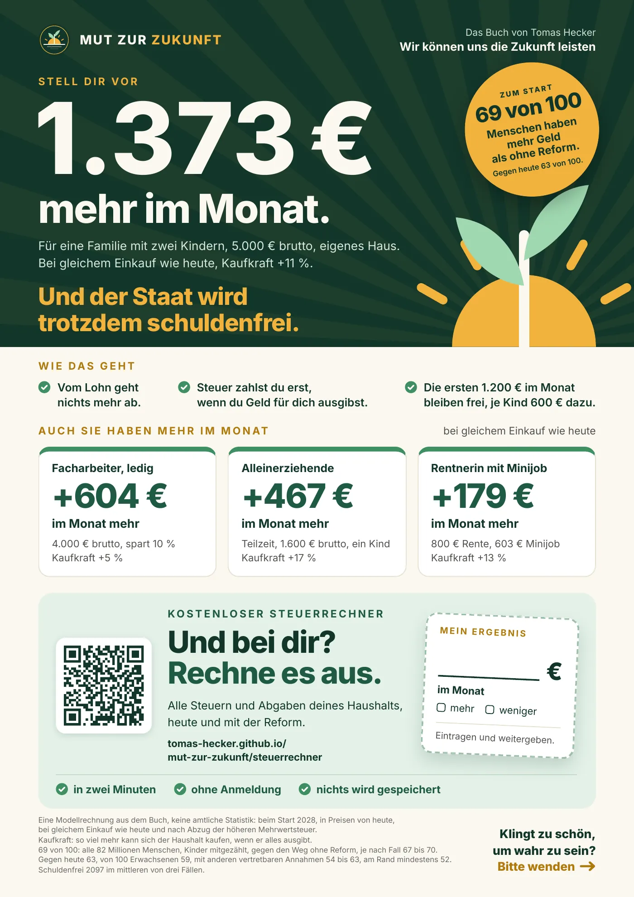
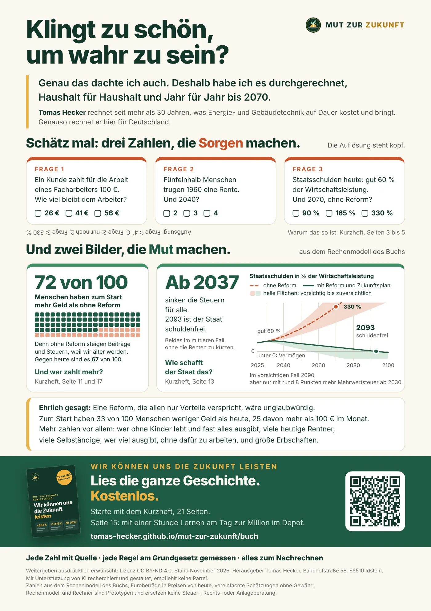

Flyer zum Buch
Wir können uns die Zukunft leisten
Ein Blatt A4, beidseitig: die Idee des Buchs „Wir können uns die Zukunft leisten“ in fünf Minuten. Zum Lesen, Ausdrucken und Weitergeben. Als PDF 2 Seiten, 0,2 MB.

Das Buch von Tomas Hecker MUT ZUR ZUKUNFT Wir können uns die Zukunft leisten STELL DIR VOR 1.373 € T S TA R 100 ZUM 69 vo n ben hen ha Mensc Geld mehr m. e Refor als ohn vo 100 n 3 . heute 6 Gegen mehr im Monat. Für eine Familie mit zwei Kindern, 5.000 € brutto, eigenes Haus. Bei gleichem Einkauf wie heute, Kaufkraft +11 %. Und der Staat wird trotzdem schuldenfrei. WIE DAS GEHT Vom Lohn geht Steuer zahlst du erst, Die ersten 1.200 € im Monat nichts mehr ab. wenn du Geld für dich ausgibst. bleiben frei, je Kind 600 € dazu. A U C H S I E H A B E N M E H R I M M O N AT bei gleichem Einkauf wie heute Facharbeiter, ledig Alleinerziehende Rentnerin mit Minijob +604 € +467 € +179 € im Monat mehr im Monat mehr im Monat mehr 4.000 € brutto, spart 10 % Teilzeit, 1.600 € brutto, ein Kind 800 € Rente, 603 € Minijob Kaufkraft +5 % Kaufkraft +17 % Kaufkraft +13 % KOSTENLOSER STEUERRECHNER Und bei dir? MEIN ERGEBNIS Rechne es aus. im Monat € Alle Steuern und Abgaben deines Haushalts, mehr weniger heute und mit der Reform. Eintragen und weitergeb tomas-hecker.github.io/ en. mut-zur-zukunft/steuerrechner in zwei Minuten ohne Anmeldung nichts wird gespeichert Eine Modellrechnung aus dem Buch, keine amtliche Statistik: beim Start 2028, in Preisen von heute, bei gleichem Einkauf wie heute und nach Abzug der höheren Mehrwertsteuer. Kaufkraft: so viel mehr kann sich der Haushalt kaufen, wenn er alles ausgibt. Klingt zu schön, 69 von 100: alle 82 Millionen Menschen, Kinder mitgezählt, gegen den Weg ohne Reform, je nach Fall 67 bis 70. um wahr zu sein? Gegen heute 63, von 100 Erwachsenen 59, mit anderen vertretbaren Annahmen 54 bis 63, am Rand mindestens 52. Schuldenfrei 2100 im mittleren von drei Fällen. Bitte wenden

Klingt zu schön, MUT ZUR ZUKUNFT um wahr zu sein? Genau das dachte ich auch. Deshalb habe ich es durchgerechnet, Haushalt für Haushalt und Jahr für Jahr bis 2070. Tomas Hecker rechnet seit mehr als 30 Jahren, was Energie- und Gebäudetechnik auf Dauer kostet und bringt. Genauso rechnet er hier für Deutschland. Schätz mal: drei Zahlen, die Sorgen machen. Die Auflösung steht kopf. F R AG E 1 F R AG E 2 F R AG E 3 Ein Kunde zahlt für die Arbeit Fünfeinhalb Menschen Staatsschulden heute: gut 60 % eines Facharbeiters 100 €. trugen 1960 eine Rente. der Wirtschaftsleistung. Wie viel bleibt dem Arbeiter? Und 2040? Und 2070, ohne Reform? 26 € 41 € 56 € 2 3 4 90 % 165 % 330 % Warum das so ist: Kurzheft, Seiten 3 bis 5 Auflösung: Frage 1: 41 €, Frage 2: nur noch 2, Frage 3: 330 % Und zwei Bilder, die Mut machen. aus dem Rechenmodell des Buchs 69 von 100 Ab 2038 Staatsschulden in % der Wirtschaftsleistung ohne Reform mit Reform und Zukunftsplan helle Flächen: vorsichtig bis zuversichtlich Menschen haben zum Start sinken die Steuern mehr Geld als ohne Reform 330 % für alle. 2100 ist der Staat schuldenfrei. gut 60 % 2100 schuldenfrei Beides im mittleren Fall, Denn ohne Reform steigen Beiträge ohne die Renten zu kürzen. und Steuern, weil wir älter werden. 0 unter 0: Vermögen Gegen heute sind es 63 von 100. Wie schafft 2025 2040 2060 2080 2100 Und wer zahlt mehr? der Staat das? Im vorsichtigen Fall 2092, Kurzheft, Seite 11 und 17 Kurzheft, Seite 13 aber nur mit rund 9 Punkten mehr Mehrwertsteuer ab 2030. Ehrlich gesagt: Eine Reform, die allen nur Vorteile verspricht, wäre unglaubwürdig. Zum Start haben 37 von 100 Menschen weniger Geld als heute, 28 davon mehr als 100 € im Monat. Mehr zahlen vor allem: wer ohne Kinder lebt und fast alles ausgibt, viele heutige Rentner, viele Selbständige, wer viel ausgibt, ohne dafür zu arbeiten, und große Erbschaften. WIR KÖNNEN UNS DIE ZUKUNFT LEISTEN Lies die ganze Geschichte. n 100 69 vo mehr n habe MUT ZUR K U R Z FA S ZUKUNFT SUNG s Kostenlos. Wir können un die Zukunft Starte mit dem Kurzheft, 21 Seiten. leisten +604 € +1.373 € ab 2038 Seite 15: mit einer Stunde Lernen am Tag zur Million im Depot. tomas-hecker.github.io/mut-zur-zukunft/buch Jede Zahl mit Quelle · jede Regel am Grundgesetz gemessen · alles zum Nachrechnen Weitergeben ausdrücklich erwünscht: Lizenz CC BY-ND 4.0, Stand November 2026, Herausgeber Tomas Hecker, Bahnhofstraße 58, 65510 Idstein. Mit Unterstützung von KI recherchiert und gestaltet, empfiehlt keine Partei. Zahlen aus dem Rechenmodell des Buchs, Eurobeträge in Preisen von heute, vereinfachte Schätzungen ohne Gewähr; Rechenmodell und Rechner sind Prototypen und ersetzen keine Steuer-, Rechts- oder Anlageberatung.